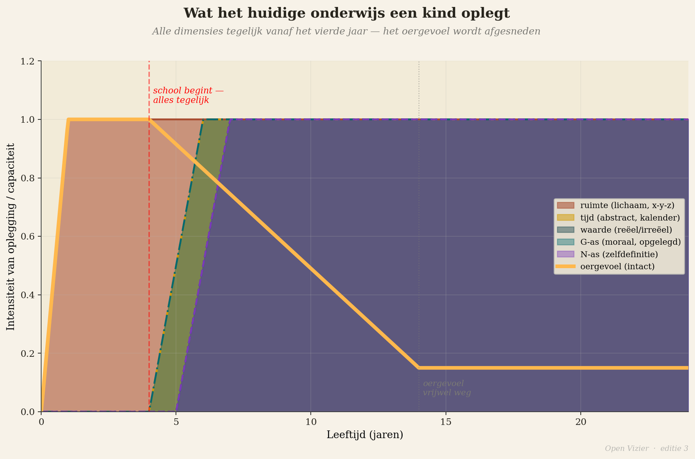
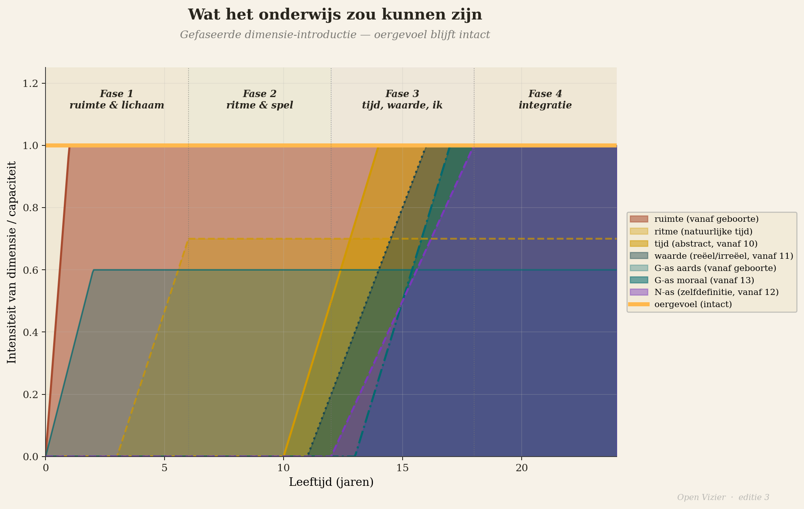
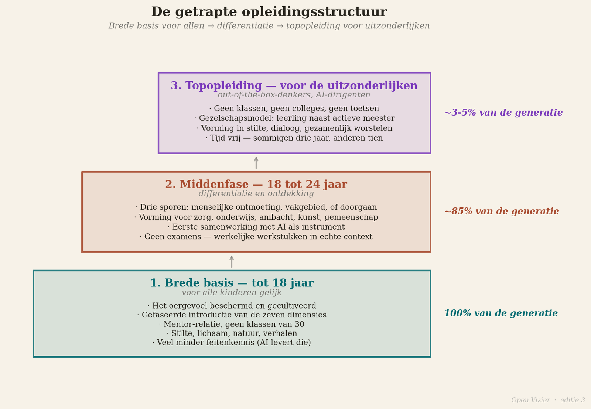
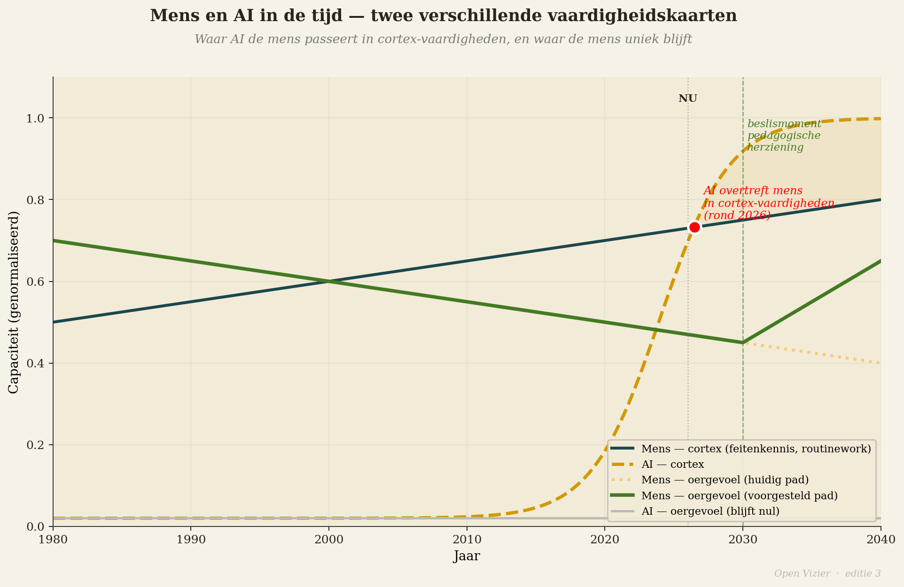
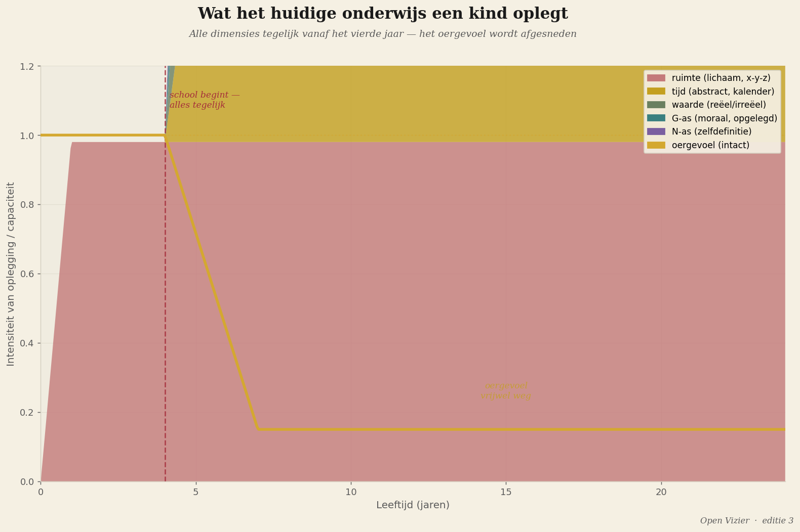

Onderwijs in het AI-tijdperk
Waarom alles wat we nu leren straks niet meer telt
Toekomst · 15 min lezen

Door Jacobus van Merksteijn
Er is een vraag die ieder beleidsdocument over onderwijs stelt, en die ze allen verkeerd beantwoorden. De vraag luidt: welke vaardigheden heeft de leerling van vandaag nodig voor de arbeidsmarkt van morgen?
De vraag is verkeerd geformuleerd. Ze stelt de arbeidsmarkt centraal, en de arbeidsmarkt van morgen bestaat niet meer op de manier waarop die vraag hem impliceert. Wat er binnen tien tot vijftien jaar op grote schaal verdwijnt, is precies het soort werk waarvoor de westerse wereld zijn bevolking al honderdvijftig jaar opleidt: de cognitieve taken die routinematig zijn, herhaalbaar, talig en kwantificeerbaar. Feitenkennis ophalen. Standaardanalyse uitvoeren. Teksten structureren. Procedures volgen. Patroonherkenning in bekende domeinen.
Dat is het domein van de kunstmatige intelligentie. En AI doet het sneller, goedkoper, foutlozer, dag en nacht, zonder ziekteverzuim, zonder vakbond, zonder cao.
De vraag die het onderwijs zou moeten stellen is niet "welke vaardigheden heeft de leerling nodig voor de arbeidsmarkt van morgen?" De vraag is: wat kan een mens die een machine nooit kan? En hoe leiden wij kinderen op voor dat wat blijft?
Wat AI overneemt

Ik ben ingenieur en uitvinder. Ik werk in materiaalkunde, energieconversie, industriële technologie. Ik heb geen romantisch beeld van AI en ik heb geen angst voor AI. Ik beschrijf wat ik zie.
Wat AI overneemt: kennisopslag en -ophaling. Een taalmodel weet meer feiten dan elk mens ooit zal weten, en het levert ze sneller op. Standaardanalyse van bekende data. Diagnostiek in bekende domeinen — medisch, juridisch, technisch — op het niveau van de beste specialist, maar in seconden en voor een fractie van de kosten. Tekstproductie voor standaarddoeleinden. Code schrijven voor bekende problemen. Vertaling, transcriptie, samenvatting, classificering.
Dat zijn geen perifere vaardigheden. Dat is de kern van wat veel professionals nu hun werk noemen.
Dat is de kern van wat veel professionals nu hun werk noemen.
Wat AI niet overneemt: het directe lezen van een menselijke situatie. Het aanvoelen van wat er werkelijk aan de hand is in een gesprek, in een relatie, in een organisatie — voorbij wat er wordt gezegd. Het begrijpen van de wereld via lichamelijke ervaring. Het verbinden van mensen op de diepste laag. Het stellen van de vragen die nog niemand heeft gesteld. Het doorbreken van een paradigma vanuit een aanvoelen dat het paradigma niet klopt.
De cortex-vaardigheden verdwijnen grotendeels. De oergevoel-vaardigheden blijven. En juist die heeft het onderwijs systematisch weggetraind.
Vier opleidingsrichtingen voor wat overblijft

Als AI de cortex grotendeels overneemt, dan zijn er vier richtingen waarvoor mensen nog opgeleid moeten worden.
De eerste richting: het oergevoel cultiveren als brede menselijke basis. Dit is de breedte — voor iedereen, niet voor een elite. Het vermogen om de werkelijkheid direct te lezen. Om aanwezig te zijn in een situatie zonder te vluchten in de cortex. Om te voelen wat er werkelijk aan de hand is met een ander mens, en daarnaar te handelen. Dit is wat een verpleegkundige moet kunnen als de AI het protocol al heeft uitgestippeld. Wat een leraar moet kunnen als de AI de leerstof al heeft gepersonaliseerd. Wat een rechter moet kunnen als de AI de precedenten al heeft gerangschikt. Het menselijk oordeel in de situatie, gegrond in direct aanvoelen.
De tweede richting: out-of-the-box denken voor de allerbesten. Echt nieuwe problemen stellen — niet nieuwe varianten van bekende problemen, maar werkelijk nieuwe vragen die buiten het bestaande paradigma liggen — dat is de meest zeldzame menselijke capaciteit, en ze is de meest waardevolle in een tijdperk waarin AI alle bekende problemen beter oplost dan mensen. Dit is het terrein van de exceptionele denker: de mens die aanvoelt dat er een vraag is die niemand nog heeft gesteld. Dit is het terrein van Wegener, die de continenten voelde samenhangen voor hij het kon bewijzen. Van Faraday, die elektromagnetisme intuïtief begreep zonder de wiskunde om het te berekenen. Van Einstein, die op een lichtstraal zat te denken voordat hij de speciale relativiteitstheorie had.
Dat soort mensen zijn niet maakbaar via een opleiding. Maar ze zijn wel vernietigbaar via een verkeerd onderwijssysteem. Het huidige systeem vernietigt ze systematisch door het oergevoel weg te trainen en de cortex centraal te stellen. Een goed systeem laat ze niet vernietigen.
De derde richting: werkelijke menselijke verbinding. Wat mensen van mensen willen is iets wat een machine nooit kan leveren: de ervaring van werkelijk gezien worden. Niet correct beoordeeld. Niet efficiënt geholpen. Werkelijk gezien — op de laag waarop je bestaat, niet op de laag waarop je functioneert. Dat is wat een goede therapeut biedt, en wat een slechte therapeut vervangt door protocol. Wat een goede leraar biedt, en wat een slechte leraar vervangt door informatieoverdracht. Wat een goede leider biedt, en wat een slechte leider vervangt door management.
De behoefte aan werkelijke menselijke verbinding verdwijnt niet naarmate AI meer doet. Ze groeit. Want het contrast tussen efficiënte machine-interactie en echte menselijke aanwezigheid wordt scherper. De mensen die werkelijke verbinding kunnen bieden, worden waardevoller, niet minder.
De vierde richting: het dirigeren van AI. Machines zijn er. Ze worden beter. De vraag is wie ze bestuurt, voor welk doel, met welk oordeel. Een ingenieur die AI-systemen inzet voor materiaalontwikkeling moet begrijpen wat de machine kan en wat ze niet kan, en hij moet het oordeel hebben om het onderscheid te kennen in de concrete situatie. Een arts die AI-diagnostiek gebruikt moet kunnen voelen wanneer de machine het bij het verkeerde eind heeft — niet via analyse, maar via het directe aanvoelen dat er iets niet klopt. Een manager die een team van AI-tools aanstuurt moet weten wat menselijke beslissingen zijn en wat machine-beslissingen zijn, en waarom dat onderscheid in bepaalde situaties cruciaal is.
Het dirigeren van AI vraagt om alle vier de andere competenties: oergevoel, buiten-het-paradigma-denken, menselijke verbinding, en de technische kennis van de machine. Dat is de meest veeleisende combinatie. Maar het is ook wat de eenentwintigste eeuw vraagt van haar beste mensen.
De getrapte opleidingsstructuur

Als de vier richtingen helder zijn, dan volgt de structuur.
Tot achttien jaar: een brede basis voor iedereen. Geen vroege selectie, geen vroege specialisatie. Het cultiveren van het oergevoel als fundament — artikel 1 tot en met 6 van deze editie beschrijven waarom en hoe. Stilte, lichaam, natuur, verhaal, diepe concentratie, horizontale gemeenschap. Echt contact met mensen en dieren en seizoenen. De W-as, de G-as en de N-as niet te vroeg maar gefaseerd ingevoerd.
En naast dat fundament: de basiskennis die AI niet vervangt omdat ze geleefd moet worden, niet opgezocht. Spreken. Schrijven vanuit eigen gedachte. Rekenen als denkvorm, niet als rekenmachine. Ambacht — iets maken met de handen, met het lichaam, dat in de wereld bestaat als je er klaar mee bent. Geschiedenis als verhaal, niet als feiten. Ethiek als gesprek over echte situaties, niet als abstract stelsel van regels.
Van achttien tot vierentwintig: differentiatie op talent en richting. Hier vertakken de wegen. De route naar out-of-the-box denken voor wie de capaciteit heeft: vrijheid, mentorschap, diepe concentratie op moeilijke onopgeloste vragen, blootstelling aan de grenzen van bestaande kennis. Niet een master in een gestandaardiseerd vak maar een leertraject gericht op het vinden van nieuwe vragen.
De route naar out-of-the-box denken voor wie de capaciteit heeft: vrijheid, mentorschap, diepe concentratie op moeilijke onopgeloste vragen, blootstelling aan de grenzen van bestaande kennis.
De route naar menselijke verbinding voor wie daarvoor de aanleg heeft: praktijk, supervisie, het leren leren van het directe contact. Psychiatrie, onderwijs, leiderschap, zorg — allemaal vereisen ze dit, en allemaal worden ze nu geteisterd door protocols die de menselijke verbinding hebben vervangen door gestandaardiseerde procedures.
De route naar het dirigeren van AI voor wie beide kanten kan: de technische kant van de machine en het menselijke oordeel over wanneer de machine te vertrouwen is.
Voor wie uitzonderlijk is in één van de richtingen: de topopleiding. Geen massaonderwijs maar intense begeleiding van de allerbesten in hun specifieke richting. Een systeem dat dit niet biedt, verliest zijn doorbraakpotentieel aan een gemiddelde die iedereen onderwijs maar niemand excellentie toelaat.
Wat dit vraagt van leraren en scholen

De getrapte structuur hierboven klinkt helder op papier. In de praktijk botst ze op één muur die alle andere muren omvat: de selectie van de mensen die het onderwijs moeten dragen.
Een leraar die kinderen moet helpen hun oergevoel te cultiveren, moet zelf een intact oergevoel hebben. Dat is niet vanzelfsprekend. De meeste leraren zijn opgeleid in hetzelfde systeem dat het oergevoel wegtraint — zij zijn het product van de problematiek die zij zouden moeten oplossen. Een lerarenopleiding die primair bestaat uit didactische technieken, vakinhoudelijke kennis en toetsingsmethoden, selecteert op de laag die het minst bepalend is voor de werkelijke pedagogische overdracht.
Een kind leert niet primair van wat de leraar zegt. Het leert van wie de leraar is — op de laag die dieper gaat dan de professionele rol. Een mens met een intact oergevoel heeft een voedende aanwezigheid die het kind ontvangt zonder dat er woorden voor nodig zijn. Eén zo'n mens in een kinderleven kan een talent redden dat anders verloren gaat. Dat is geen romantische bewering. Het is de structurele logica van de directe communicatie tussen oergevoelens die artikel 4 beschreef.
Wat dit concreet vraagt: leraren selecteren op aanwezigheid, niet alleen op diploma. Leraren begeleiden in het herstel van hun eigen oergevoel, als onderdeel van de beroepsopleiding. Scholen inrichten als gemeenschappen van mensen die de werkelijkheid direct lezen, niet als productiemachines die kennisunits leveren aan kinderen-als-containers.
Dat klinkt groot. Het is ook groot. Maar de schaal van de verandering die nodig is, is evenredig met de schaal van de crisis die het AI-tijdperk aankondigt. Kleine aanpassingen zijn niet genoeg. Cosmetische hervorming is niet genoeg. Wat nodig is, is het antwoord op de werkelijke vraag: waarvoor zijn mensen er, als de machine het werk doet?
Het antwoord is niet dat mensen er zijn voor de machine. Het antwoord is dat de machine er is voor de mens — maar alleen als de mens weet wat hij is, wat hij wil, wat hij voelt en wat hij aanvoelt. Dat weten begint bij het oergevoel. Het oergevoel begint bij de eerste dag van het leven. En het wordt beschermd of vernietigd in de jaren die erop volgen.
De vraag die we niet durven stellen

Hier is de vraag die ik niet langs wil lopen.
Als AI de cortex-vaardigheden grotendeels overneemt, en als het huidige onderwijs primair cortex-vaardigheden traint, dan leiden we kinderen momenteel op voor werk dat over tien jaar niet meer bestaat. Niet een beetje minder bestaat. Niet met aanpassingen nog bestaat. Gewoon: niet meer bestaat in de vorm waarvoor we opleiden.
Dat is een stelling met enorme consequenties. Als ze klopt — en ze klinkt in academische kringen al minder controversieel dan vijf jaar geleden — dan is het urgentste educatieve vraagstuk van de komende tien jaar niet hoe we het huidige onderwijs digitaliseren, niet hoe we AI veilig in de klas brengen, niet hoe we de toetsing aanpassen. Het is: hoe bouwen we een volledig ander systeem, en hoe snel?
Het is: hoe bouwen we een volledig ander systeem, en hoe snel?
De politieke moed die dit vraagt is groot. Het huidige systeem wordt bestuurd door mensen die in het huidige systeem zijn opgeleid, die het huidige systeem begrijpen, en die belang hebben bij het voortbestaan van het huidige systeem. Fundamentele hervorming vraagt dat die mensen zichzelf overstijgen.
Dat is niet gemakkelijk. Maar het is niet vrijwillig meer. De druk van de technologische verandering dwingt de keuze af — vroeg of laat, bewust of gedwongen. De vraag is of we de keuze maken voordat de crisis hem afdwingt.
Wat blijft

Ik sluit met het meest wezenlijke.
Wat blijft als AI alles overneemt wat de cortex kan, is het oergevoel. De directe verbinding met de werkelijkheid die niet te simuleren is, niet te repliceren is, niet te digitaliseren is. Het lezen van een situatie vóór de woorden komen. Het aanvoelen van een mens die beweert iets maar anders is dan wat hij beweert. Het weten dat er een vraag is die niemand nog heeft gesteld.
Dat is niet een niche-vaardigheid voor een creatieve elite. Dat is de kern van wat het betekent een mens te zijn in een wereld vol machines die menselijke taken uitvoeren. De machines doen het werk. De mens is er voor wat het werk betekent, voor wie het werk dient, voor de vraag of het de moeite waard is.
Een beschaving die dat onderscheid heeft uitgebanned uit haar onderwijs is niet klaar voor het tijdperk dat zij zelf heeft gebouwd. Ze heeft de machine gemaakt en zichzelf overbodig verklaard. Dat is een industriële vergissing, maar dan van de tweede orde: de vergissing waarbij we niet meer wisten wat wij waren, en de machine programmeerden als vervanging.
Wie zijn kinderen opleidt voor het AI-tijdperk, begint bij de eerste drie jaar van het leven, zoals artikel 6 beschreef. Hij eindigt bij de vraag hoe een zeventienjarige zijn eigen oergevoel gebruikt als kompas in een wereld die hem anders wil hebben. Die verbinding — van het eerste jaar tot het zeventiende, van het eerste "mama, ik heb honger" tot de eerste vraag die niemand voor hem heeft gesteld — dat is het opleidingstraject voor de eenentwintigste eeuw.
Het is ook het moeilijkste opleidingstraject dat ooit is voorgesteld. En het is het enige dat het tijdperk doorstaat.
Voor wie verder wil lezen: de theoretische onderbouw — het oergevoel, de drie hersenlagen, de gefaseerde dimensie-introductie — staat in het werk Denkbasis voor een 7-dimensionaal gevoelsmodel en het Manifest voor onderwijs en opvoeding, beide beschikbaar als download op openvizier.org. Een afzonderlijk naslagwerk over onderwijs in het AI-tijdperk (ai_tijdperk_onderwijs.md) is in productie en zal op dezelfde pagina worden gepubliceerd zodra het gereed is.
Een afzonderlijk naslagwerk over onderwijs in het AI-tijdperk (ai_tijdperk_onderwijs.md) is in productie en zal op dezelfde pagina worden gepubliceerd zodra het gereed is.
Wie leiden we op in het AI-tijdperk?
Ieder beleidsdocument vraagt: welke vaardigheden heeft de leerling nodig voor de arbeidsmarkt van morgen? De vraag is verkeerd. Die arbeidsmarkt bestaat straks niet meer op de manier die de vraag impliceert.
"Wat kan een mens die een machine nooit kan? En hoe leiden wij kinderen op voor dat wat blijft?"
Wat AI overneemt
Ik ben ingenieur en uitvinder. Ik heb geen romantisch beeld en geen angst — ik beschrijf wat ik zie. AI neemt over: kennisopslag en -ophaling, standaardanalyse, diagnostiek in bekende domeinen, tekstproductie, code, vertaling. Sneller, goedkoper, foutlozer, dag en nacht, zonder cao. Dat is geen periferie — dat is de kern van wat veel professionals nu hun werk noemen.
Wat AI niet overneemt: het directe lezen van een menselijke situatie, het verbinden van mensen op de diepste laag, het stellen van de vraag die niemand nog heeft gesteld. De cortex-vaardigheden verdwijnen. De oergevoel-vaardigheden blijven — en juist die heeft het onderwijs weggetraind.
Vier richtingen voor wat overblijft
Eén: het oergevoel cultiveren als brede menselijke basis — voor iedereen, het menselijk oordeel in de situatie. Twee: out-of-the-box denken voor de allerbesten — de Wegeners en Einsteins, niet maakbaar via een opleiding maar wel vernietigbaar door een verkeerde. Drie: werkelijke menselijke verbinding — de behoefte aan werkelijk gezien worden groeit naarmate AI meer doet. Vier: het dirigeren van AI — wie de machine bestuurt, voor welk doel, met welk oordeel.
Wat dit vraagt van leraren
De structuur botst op één muur: de selectie van de mensen die het onderwijs dragen. Een leraar die kinderen helpt hun oergevoel te cultiveren, moet zelf een intact oergevoel hebben — maar de meeste leraren zijn opgeleid in hetzelfde systeem dat het wegtraint. Een kind leert niet primair van wat de leraar zegt; het leert van wie de leraar is.
Leraren selecteren op aanwezigheid, niet alleen op diploma. Scholen inrichten als gemeenschappen van mensen die de werkelijkheid direct lezen, niet als productiemachines die kennisunits leveren aan kinderen-als-containers.
De vraag die we niet durven stellen
Als AI de cortex-vaardigheden overneemt en het huidige onderwijs primair cortex-vaardigheden traint, dan leiden we kinderen op voor werk dat over tien jaar gewoon niet meer bestaat. Niet een beetje minder. Niet met aanpassingen. Niet meer. Het urgentste educatieve vraagstuk is dan niet hoe we digitaliseren of toetsing aanpassen — het is: hoe bouwen we een volledig ander systeem, en hoe snel?
De politieke moed die dit vraagt is groot, want het systeem wordt bestuurd door mensen die er belang bij hebben dat het blijft. Maar het is niet vrijwillig meer. De technologische verandering dwingt de keuze af — bewust of gedwongen.
Slot
Wat blijft als AI alles overneemt wat de cortex kan, is het oergevoel — niet te simuleren, niet te digitaliseren. De machines doen het werk. De mens is er voor wat het werk betekent, voor wie het dient, voor de vraag of het de moeite waard is. Een beschaving die dat onderscheid heeft uitgebannen uit haar onderwijs, heeft de machine gemaakt en zichzelf overbodig verklaard.
Het is het moeilijkste opleidingstraject dat ooit is voorgesteld. En het is het enige dat het tijdperk doorstaat. — Jacobus van Merksteijn